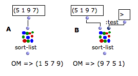

OpenMusic DocumentationHiérarchie de section : OM 6.6 User Manual > Visual Programming I > Box Inputs > Additional Inputs
OpenMusic DocumentationHiérarchie de section : OM 6.6 User Manual > Visual Programming I > Box Inputs > Additional Inputs
Navigation : page précédente | page suivante
Attention, votre navigateur ne supporte pas le javascript ou celui-ci à été désactivé. Certaines fonctionnalités de ce guide sont restreintes.
Additional Inputs : Optional, Keyword and Rest Arguments
For practical issues, function boxes don't always show all possible inlets. Additional arguments can be added to Lisp and OM functions. They can be either optional, keyword , or " rest " arguments.
Optional arguments can be added successively in a predefined order, which cannot be modified.
Keyword arguments can be added and named ad libitum by the user with a keyword.
Hence, keyword arguments are especially convenient if a function has numerous additional arguments : the user can choose one or more specific items among a whole range of arguments. This also means that keyword arguments are more or less independent from each other.
Rest arguments represent an unlimited numbers of successive parameters.
Contrary to standard arguments, functions always work if optional arguments or keyword arguments are not specified, usually because suitable default values are applied.
Getting Information About Arguments
The additional arguments type – optional or keyword arguments – is indicated at the beginning of the documentation.
- Optional arguments are signaled by the" &optional "prefix.
- Keyword arguments are identified by the &key prefix.
- Rest arguments are identified by the &rest prefix.
Accessing Documentation
Optional Arguments
Optional arguments are not visible by default
|

The OM-ROUND function has one input by default and and two optional inputs.
|
Adding All Optional Inputs : >
Press > to add all possible optional inputs at once.
Using Optional Inputs : OM-ROUND

|
OM-ROUND rounds a number (or a list of number) to the closest integer value(s). It has also two Optional arguments :
|
The standard use of OM-ROUND does not require using the optional inputs (A). In (B) we use the first optional ( decimals ) to round the input number whith a higher precision. |

|
Keyword Arguments
Keyword arguments are not visible by default. To add keyword arguments, select the box and press To remove them, press |

The SORT-LIST function has one initial argument and three keyword arguments
|
Note that keyword arguments are represented by dark blue inlets .
Setting Keyword Arguments
Contrary to optional arguments, keyword arguments are not in a fixed, predefined order and can therefore be used independently from one another.
You must therefore set both the name of the keyword input and its value.
The default name of a new keyword is the first unused argument in the keywords list. This name is visible by hovering the mouse over the box inlet. Note that keyword names are always preceded by " To change the argument :
|

|
The value of a keyword argument is set like the value of a standard argument by connecting a box to the keyword input. Like standard or optional inputs, keyword inputs can have default values. To show this value, |

|
When an input menu is attached to a keyword input, it is also accessed with |

|
Setting Box Inputs, Input Menus, etc.
Using Keyword Inputs : SORT-LIST
SORT-LIST sorts items in a list. It has three keyword arguments
|
{kind=link}
Using Functions as Arguments (test, key...)
The default behaviour of the function sorts the numbers in ascending order (A). If we add the :test keyword input and change the test function, we can change this default behaviour. Here, the test function is changed for >, which outputs numbers in decreasing order (B). |

|
The :key argument is a potential connection used for applying a function to the elements of the input list, before they are compared with each other. Here, (C) we sort a more complex list by comparing the second element of each item. |

|
It would also be possible to change both the test and key values by adding another keyword input to the box.
In general, any combination of the different keyword inputs is allowed.
Rest Arguments
Rest arguments are not visible by default, and are generally at the end of the arguments list of a function. They work like optional arguments but are not named nor of a specific number.
|

The X-APPEND function has two initial arguments and a undertermined number of 'rest' arguments.
|
Références :
Plan :
Navigation : page précédente | page suivante
A propos...(c) Ircam - Centre Pompidou